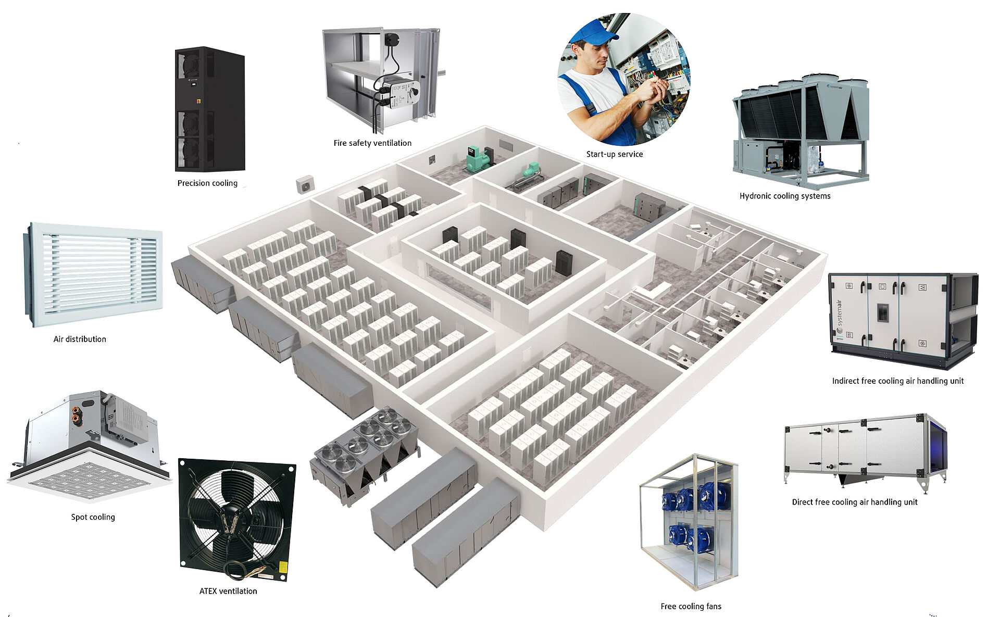

Comment fonctionne les centres de données ?
Le fonctionnement d’un data center repose sur 6 grands critères principaux :
1- La superficie de la salle
La salle qui fait office de centre de données doit être très vaste pour accueillir toutes les machines, les appareils et les hardware du système informatique de l’entreprise. Pour vous donner une idée du nombre de machines présentes dans un data center, nous allons prendre le cas d’OVH. Sur son data center installé à Beauharnois, dans la banlieue de Montréal, l’entreprise dispose de 360 000 serveurs !
Le nombre de machines présentes dans un centre de données varient en fonction du cas d’usage et de la taille de l’entreprise qui l’exploite, mais en règle générale, on n’est sur pas moins 5000 serveurs pour le plus petit data center. La salle doit donc être suffisamment grande pour contenir tout cet équipement.
2- Une source d’alimentation en électricité
Le second critère fondamental c’est l’alimentation en électricité. En effet, les data centers sont parmi les plus gros consommateurs d’électricité au monde. Selon le réseau de transport d’électricité (RTE), la consommation d’énergie des data centers a atteint 3 TWh en 2015, soit 8% de la consommation énergétique nationale en 2016. On estime qu’un seul centre de données consomme autant d’énergie que 30 000 habitants européens.
3- Une source de refroidissement
Les machines installées dans un data center génèrent beaucoup de chaleur. Le centre de données doit être refroidi de façon continue pour éviter les risques d’incendie, de pannes et de détérioration de l’infrastructure.
Ces systèmes de refroidissement eux-mêmes consomment beaucoup d’électricité. D’ailleurs, il estimé que près de 43 % des coûts d’exploitation totaux d’un data center proviennent de l’énergie nécessaire pour l’alimenter et le refroidir.
Le secret c’est d’être proche d’un barrage hydro-électrique, ou de préférence près d’un lac, une mer ou une source d’eau abondante.
4- Les normes des bâtiments
Tout espace suffisamment grand peut être utilisé comme centre de données. Cependant, la conception et la mise en œuvre d’un data center nécessite certaines précautions.
Afin de garantir une efficacité énergétique maximale et un impact minimum sur l’environnement, la meilleure solution pour abriter les centres de gestion des données est de faire construire des bâtiments à charpente métallique, un peu comme ceux proposés par l’entreprise ASTRON. Ces bâtiments métalliques sont construits pour protéger les serveurs contre les inondations et les incendies.
Il faut aussi que l’accès aux bâtiments soit sécurisé.
5- La sécurité des bâtiments
La sécurité du data center doit être assurée à la fois sur le plan physique et le plan logiciel.
Sur le plan physique, les bâtiments du centre doivent être équipés en portes d’accès sécurisé (authentification par badge) : seul le personnel autorisé peut pénétrer au cœur du centre de données. Le data center doit être sous surveillance vidéo permanente, et l’accès est strictement surveillé par des agents de sécurité. es centres modernes sont généralement équipés de ces deux systèmes d’alarme :de prévention d’incendies et d' extinction d’incendies
Sur le plan logiciel, le data center sera le plus souvent équipé d’un logiciel antivirus et d’un pare-feu pour empêcher les cyberattaques de réussir. Aussi, des patchs de sécurité sont régulièrement appliqués pour renforcer la sécurité.
6 – Les composants d’un data center moderne
Voici les composants de base d’un data center :
- Les serveurs, les baies de stockage de données, les systèmes de stockage redondant pour assurer la tolérance aux pannes des disques dur, le système de climatisation et de refroidissement, le système de protection pour éviter les intrusions informatiques
- L’architecture réseau : ce sont des routeurs et des commutateurs qui connectent ces éléments entre eux et vers l’extérieur
- la réplication géographique, pour garantir la tolérance du data center entier
- L’unité de distribution d’énergie avec bloc d’alimentation de secours
vers le haut